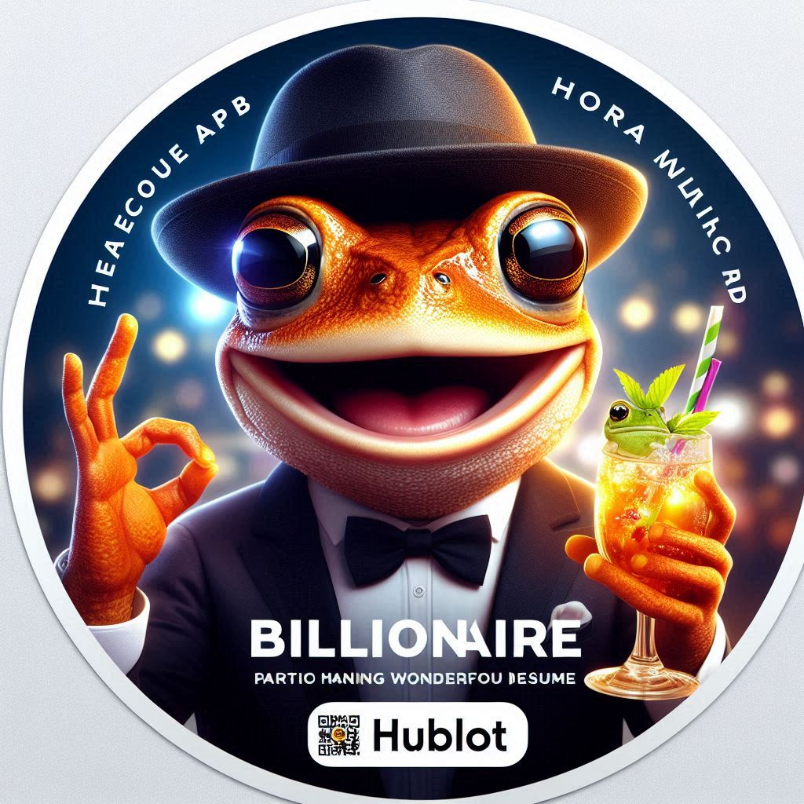
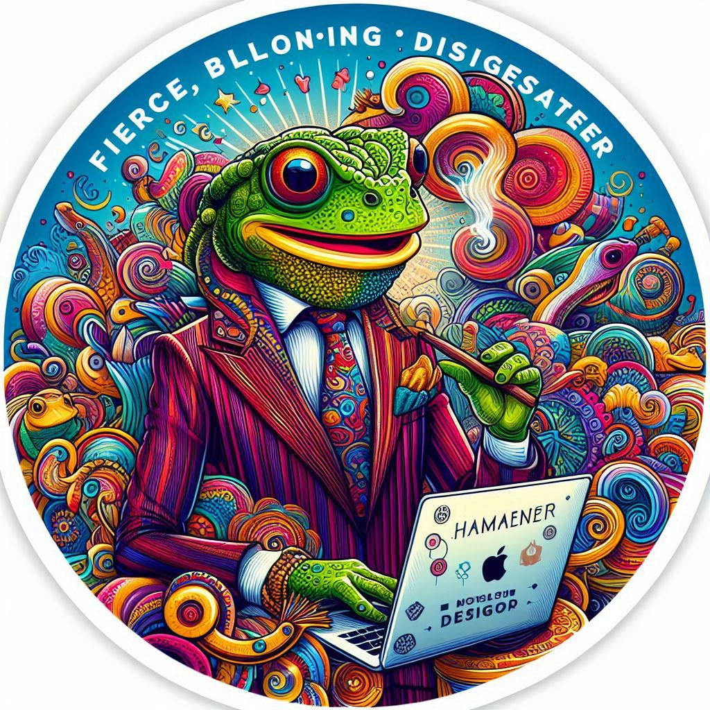
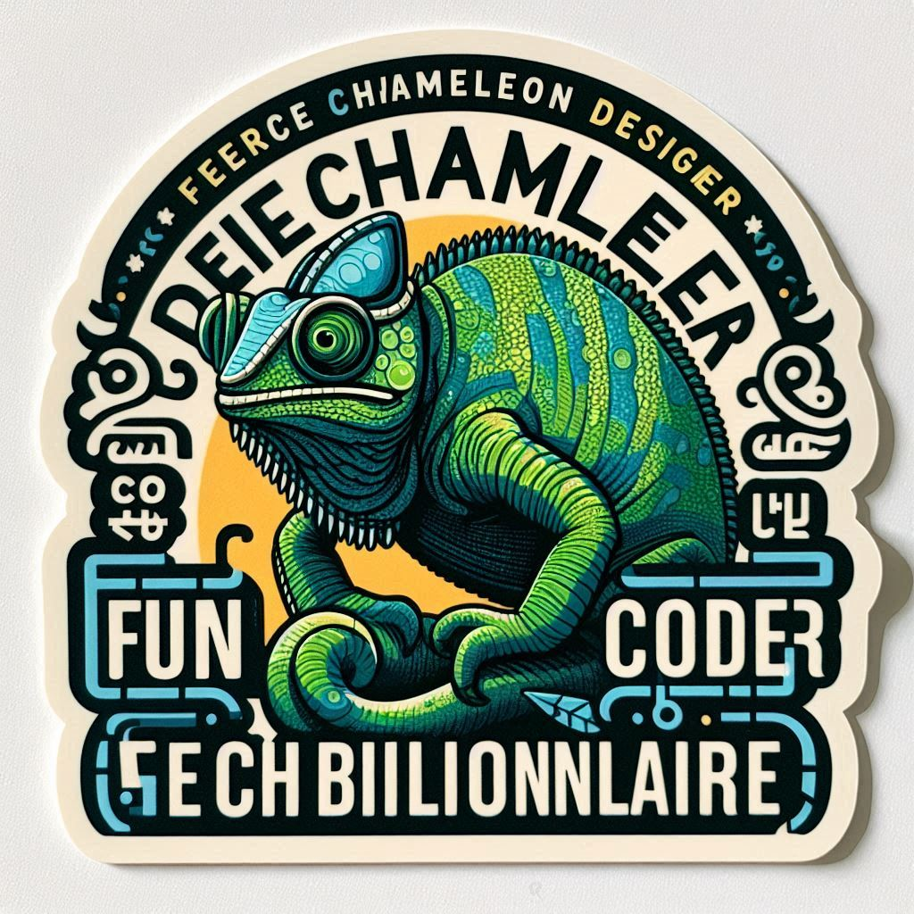

cssGuden AutoChic CSS: The Ultimate CSS Library for Any Web Application

Design Process
When designing AutoChic CSS, we asked ourselves:
Who is our target audience?
Web developers, designers, and anyone looking to create a visually appealing web application.
What are their needs and pain points?
An easy-to-use CSS library that can help them create a modern and responsive design without having to start from scratch.
What are the current trends and best practices in web design?
Modular and flexible design, responsive design, and a focus on user experience.
How can we create a CSS library that meets these needs and exceeds expectations?
By providing a comprehensive and modular CSS architecture, pre-designed components and layouts, and a focus on ease of use and customization.


Design Principles
Create a visually appealing and modern design that enhances the user experience
Use a modular and flexible approach to make the library easy to customize and extend
Focus on simplicity and ease of use, while still providing advanced features and functionality
Features
Responsive design for various screen sizes and devices
Modular CSS architecture for easy customization
Pre-designed components and layouts for common use cases
Easy to use and integrate into your web projects
Getting Started
- Link the AutoChic CSS file to your HTML document
- Start building your web page using the provided components and layouts
- Customize the styles to fit your needs using the modular CSS architecture
Contributing to AutoChic CSS
If you'd like to contribute to the library, please follow these guidelines:
- Fork the repository and create a new branch for your changes
- Follow the design principles and coding standards outlined above
- Write clean, modular, and well-documented code
- Submit a pull request for review and feedback
License and Attribution
AutoChic CSS is licensed under the MIT License.
Attribution is not required but appreciated. If you use AutoChic CSS in your project, please consider giving credit to the original authors.
Version History
v1.0: Initial release of AutoChic CSS aka cssGuden